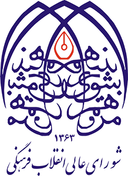

ارزیابی سند راهبردی علوم و فناوریهای شناختی (افق ۱۴۰۴)
شرح چالش در زیستبوم: تنها ۶۰ محصول به بازار رسیدهاند و بازار کل زیستبوم ۱۴۵ میلیون دلار است؛ عقبماندگی از بازار ۵۰ میلیارد دلاری جهانی نوروتک.
راهکار پیشنهادی موج دوم: تسهیل ورود شرکتها به بورس و فرابورس، راهاندازی شتابدهندههای صنعتی تخصصی و خرید تضمینی دستگاههای ساخت داخل توسط بیمارستانها.
شرح چالش در زیستبوم: عدم تعهد سازمانهای بیمهگر در پرداخت هزینههای بازتوانی و غربالگری شناختی، تقاضای درمانی را با بحران مواجه کرده است.
راهکار پیشنهادی موج دوم: تصویب کدهای تعرفهای خدمات شناختی در شورای عالی بیمه سلامت و درج در سبد خدمات پایه بیمهای کشور.
شرح چالش در زیستبوم: تداوم تدریس متون ترجمهای غربی در دانشگاهها و کمرنگ بودن همگرایی حوزوی-دانشگاهی در مدلهای آزمونپذیر ذهن.
راهکار پیشنهادی موج دوم: تأسیس قطب دائمی مطالعات فلسفه ذهن و علوم اعصاب با مدیریت مشترک حوزه و دانشگاه، و اعطای گرنت ویژه تألیف کتب مرجع.
شرح چالش در زیستبوم: اتکای مفرط زیستبوم به کمکهای بلاعوض معاونت علمی و ورود بسیار محدود سرمایهگذاران بخش خصوصی و نهادهای مالی.
راهکار پیشنهادی موج دوم: استفاده از ابزار اعتبار مالیاتی قانون جهش تولید دانشبنیان، صندوقهای سرمایهگذاری جسورانه تخصصی و کرادفاندینگ.
شرح چالش در زیستبوم: پروژههای تحریک عمقی مغز در فاز حیوانی متوقف مانده و عدم ورود به ایمپلنتهای انسانی و تراشههای نیمههادی نورومورفیک.
راهکار پیشنهادی موج دوم: ایجاد کنسرسیوم مشترک نانو-میکروالکترونیک و علوم شناختی جهت ساخت تراشه و آغاز سریعتر کارآزماییهای بالینی تحت نظارت اخلاق پزشکی.
شرح چالش در زیستبوم: تقلیل علوم شناختی به ربات، فناوری و محصول و کمتوجهی به ماهیت انسانمحور، فرهنگی، اجتماعی، فلسفی و تمدنی آن، موجب عدم توازن میان توسعه فناوری و توسعه فهم و تعالی انسان میشود.
راهکار پیشنهادی موج دوم: راهکار پیشنهادی موج دوم: بازتعریف علوم شناختی با تأکید همزمان بر انسان، فرهنگ و فناوری؛ بهگونهای که توسعه فناوری و محصول در کنار پژوهشهای بنیادی، فلسفی، زبانی، اجتماعی و فرهنگی و با هدف فهم و تعالی انسان دنبال شود.